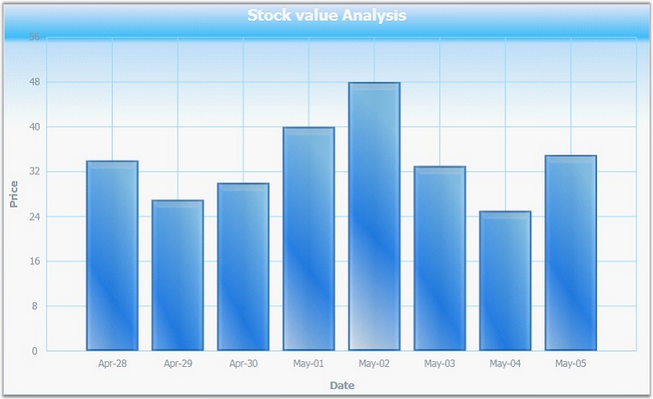
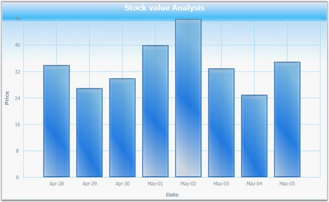

This feature is used to adjust the range padding for the Chart Axis, i.e., it enables you to space the grid lines in the Chart. This can be achieved by using the RangePadding property of the ChartAxis class. By default, this property is set to Normal.
 Note: This property will take effect only when the
IsAutoSetRange property of the ChartAxis class is set to true.
Note: This property will take effect only when the
IsAutoSetRange property of the ChartAxis class is set to true.
|
Chart Axis Property |
Description |
|
RangePadding |
This property is used to adjust the range padding for the Chart Axis. It includes the following options.
· Normal-Range of the axis will be calculated from the nearest multiples of interval from minimum and maximum values in the chart points. · None-Range of the axis will be calculated from minimum value in the chart points to the maximum value in the chart points. · Additional-Range of the axis will be calculated one interval lower from the minimum value to one interval higher than the maximum value in the chart points in terms of multiples of interval. |
The following code example illustrates how to set the Range Padding for the Chart Axis.
|
[XAML]
<syncfusion:ChartArea> <syncfusion:ChartArea.SecondaryAxis> <syncfusion:ChartAxis IsAutoSetRange="True" RangePadding="Normal"/> </syncfusion:ChartArea.SecondaryAxis> </syncfusion:ChartArea> |
|
[C#]
// Create an instance for the Chart and Chart Area. Chart chart = new Chart(); ChartArea area = new ChartArea(); chart.Areas.Add(area);
// Initialize the Range Padding values. chart.Areas[0].SecondaryAxis.RangePadding = ChartRangePaddingType.Additional; |

Figure 100: RangePadding = "Normal"

Figure 101: RangePadding = "None"
Figure 102: RangePadding = "Additional"